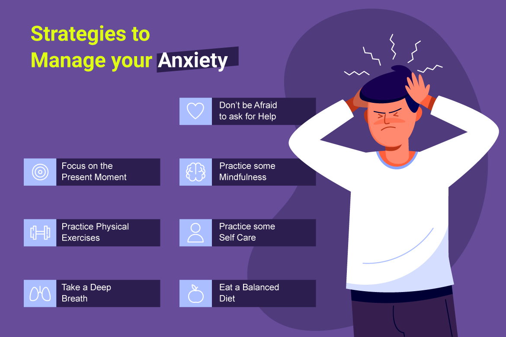

10 tips that can reduce the stress of
weight gain, I have
also followed
I have also followed
Taking Stress can be perilous. Regardless of whether it is identified with contemplates, work related,
family, or whatever else.
A study directed by the American Psychological Association (APA) in 2017 on stress discovered side
effects of worry in 3 of 4 individuals. (1)
Stress is a circumstance when you can't manage a circumstance or think that its hard to manage it. In
such a circumstance, the individual is stressed and numerous inquiries emerge in his brain.
Stress commands commonly in any event, when weight is expanded. I am
stating this to
Personal Experience. Some time prior my weight was around 92 kg, each individual I met would request
that I shed pounds. Much after the entirety of my endeavors, I was not getting thinner.
At once, I began getting worried about my wellbeing. I escaped worry by receiving a few techniques.
Today I have decreased my weight alongside soothing pressure and I am completely fit.
On the off chance that you also are under worry because of weight increase, at that point by lessening
it, you can get more fit in a solid manner. In this way, rather than taking pressure, there is a need to
do the correct way of life, clean eating routine, and customary exercises.
“More smiling, less worrying. More compassion, less judgment. More blessed,
less stressed. More love, less hate.”
- Roy T. Bennett, The Light in the Heart
How could I diminish the pressure brought about by weight addition and
how could I
quit developing weight? I am giving a few hints about this, with the assistance of which you also can
without much of a stretch shed pounds by easing pressure.
Think about the pressure and weight gain as

an individual feels increasingly hungry in stress. In such a
circumstance, he begins
eating unfortunate food. This is frequently called passionate eating or stress eating.
Stress decrease will be expected to diminish the danger of weight increase and corpulence. Life doesn't
stay under its own control because of expanding pressure.
Stress can likewise stop the procedure of weight reduction. Regardless of whether this pressure is an
aftereffect of expanded degrees of cortisol hormone or the blend of Unhealthy Stress-Induced Behaviors
or both.
Exorbitant pressure can prompt issues, for example, cerebral pains, muscle strain, stomach related
issues, rest unsettling influences. An ongoing report has likewise indicated that pressure can prompt
decreased digestion. (2)
Elevated levels of the pressure hormone cortisol can build weight and stomach fat. Ohio State University
study shows that pressure makes less calories consume.
Let us likewise realize how to decrease worry because of weight gain.
1. Perceive the manifestations of stress-
Whenever focused, whenever advised to the individual in front, at that point he will never accept that
he is under pressure. Likewise, in the event that somebody lets you know, you won't trust it.
In this way, it is most significant that you comprehend and perceive the indications of stress.
Nervousness, Irritability, and Muscle Tension are a portion of the signs from which you can recognize
feelings of anxiety.
On the off chance that you feel the signs referenced above or like them, at that point the time has come
to recuperate a piece. Something else, its level will increment bit by bit.
2. Quit performing multiple tasks.
No big surprise we're all uber focused when we're answering to instant messages while staring at the TV
and talking on the telephone at the same time! Not exclusively is performing multiple tasks absolutely
wasteful, but on the other hand, it's connected to the expanded creation of stress hormones (cortisol
and adrenaline) that can send your body into alarm mode! So relax and approach things slowly and
carefully.
3. Ask yourself, for what reason would you say you
are eating? (Ask Yourself, Why Eating)-
Studies show that an individual's hunger increments during stress and he will in general eat more shoddy
nourishment, seared food. If so with you, at that point you need to deal with it.
At whatever point you want to eat something, stop for 2 seconds and ask yourself the inquiry, for what
reason would you say you are eating? Is it accurate to say that you are extremely eager or would you say
you are focused and on edge?
On the off chance that your cerebrum says that you are extremely eager, at that point you can eat. In
any case, if your heart says that you are not eager, you need to eat in pressure. So you control
yourself.
4.Attempt the Naam Yoga Hand Trick.
Utilizing your fingertips, apply strain to the space between the knuckles of your list
and center fingers. This makes a feeling of prompt unwinding by actuating a nerve that extricates the
zone around your heart (don't stress, it's not as perilous as it sounds).
5. Urge yourself to eat, at that point control
yourself-
Seeing flavourful dishes makes numerous individuals watery. I was additionally of a
similar kind. Consequently, it will be essential in the event that somebody is eating delectable food
before you, at that point you keep yourself occupied or control your psyche.

6. Record Eating Habits-
All things considered, don't skirt taking normal miles. I have found now and again
that individuals quit any pretence of eating when they put on weight.Aside from this, track dietary
patterns. This can assist you in seeing examples and associations. With which you can without much of a
stretch set up a system.
7. Have a back rub trade.
The majority of us don't have 50 quid lying around to sprinkle out on an expert back
rub, so soothe strain the cheap way and trade rubs with a companion. For instance, have a go at kneading
the muscle under the thumb to alleviate strain in the hands (you'll look simply like an ace!) There are
heaps of tips on the web so you, your mate and your bank parity can appreciate the advantages of
unwinding!
8. Squeeze a pressure ball.
Utilizing a pressure ball can help mitigate strain by advancing muscle unwinding and
giving a general feeling of discharge.
9. Customary physical action and exercise-
The last and most significant approach to diminish pressure was that I began physical
action all the time. I used to go to the recreation center, stroll in the recreation center at night, do
yoga, and once in a while take move classes.
Because of this, my state of mind likewise stayed great and calorie consuming began diminishing weight
progressively. At the point when I shed pounds, my certainty level expanded and I am extremely glad at
this point.
10. Rest soundly.
While stress can meddle with resting, dozing can likewise mitigate pressure. So
utilize a portion of our relaxing tips to assist you with unwinding before bed and follow our DTL Sleep
Guide so you can guarantee that you're spending 33% of your life in sleep time delight… zzz…
Conclusion:
Taking
pressure makes hurt your wellbeing. In this way, don't pressure expanding weight, work in a positive
bearing. You will get results from this.
To lessen pressure, take a walk, go to the recreation centre, resort to companions, do yoga, invest
energy with family, tune in to light music free Reprint Articles, and read a book.